点击左侧菜单中的【车辆】，可以进入车辆页面。
车辆页面以列表的形式分类显示了所有车辆、行驶车辆、停驶车辆、无联系车辆、故障车辆、报警车辆以及历史车辆。
在车辆页面，可以看到每辆车的详细情况，以及它的行程记录。
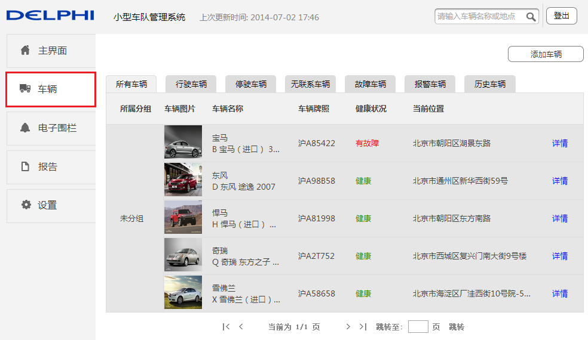
添加车辆
点击【添加车辆】按钮，输入终端信息，即设备编号（ESN或IMEI）以及注册密钥，随后点击保存按钮，如果验证通过，则添加车辆成功，否则失败。
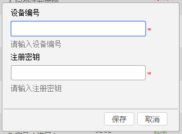
车辆页面分类查看
点击各TAB标签，即可进入相应车辆列表查看对应的车辆信息。
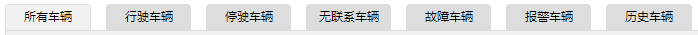
车辆详情页面
点击每条记录后面的【详情】按钮，可以进入车辆详情页面。
车辆详情页面显示所选车辆的详细信息，包括司机信息、车辆/终端信息、行程记录、油表记录、报警、电子围栏、电池信息，以及健康状况等。
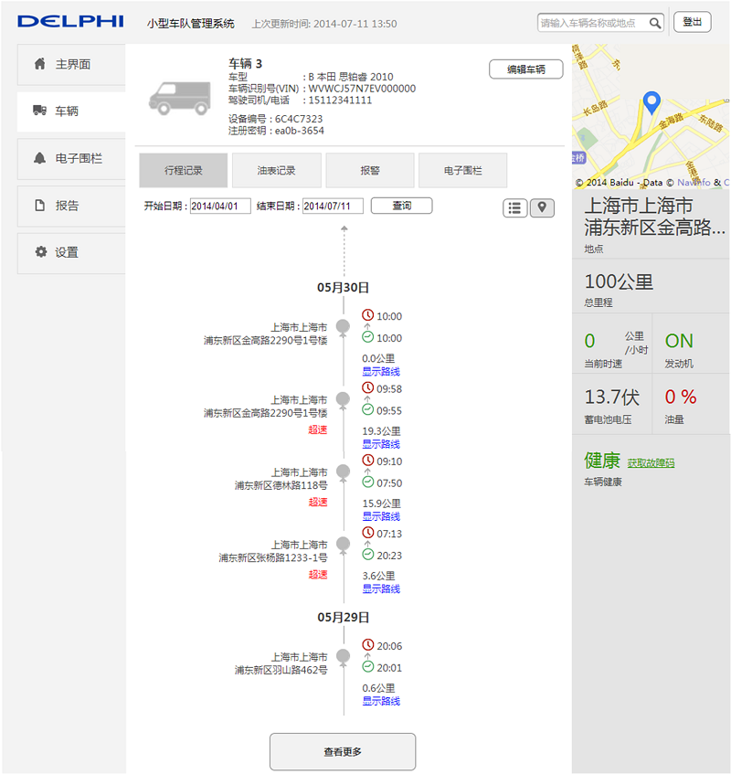
编辑车辆
点击【编辑车辆】按钮，将进入设置页面，可以对所选车辆进行编辑。
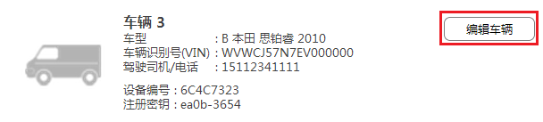
行程记录
行程记录-地图模式
点击行程记录TAB页标签，页面会显示出当前车辆的部分行程记录。默认将以地图模式显示。点击地图模式/列表模式按钮，可以在地图模式与列表模式之间切换。
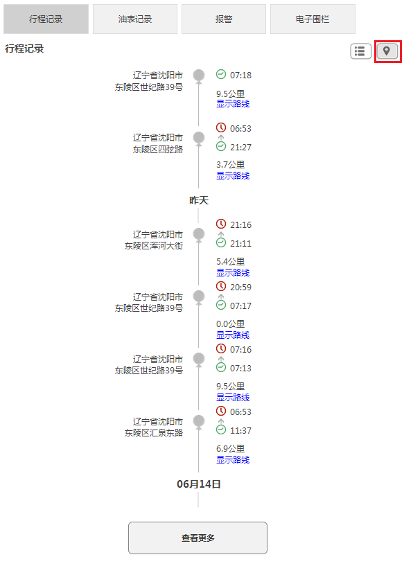
行程记录以车辆启停点为基准显示行程，每段行程信息会显示此段行程的出发时间、到达时间以及行程距离。若最近的行程记录上方显示一条虚线，则表明此车当前正在行驶中，此段行程还没有到达终点。
点击每段行程记录中的显示路线，可在地图中查看此段行程路线以及行程详情。
通过选择开始日期和结束日期，点击查询按钮，可以查询指定时间段内，该车的行程记录
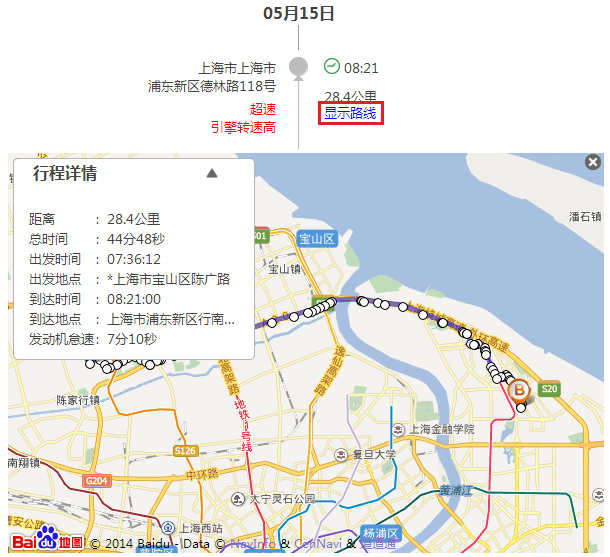
行程详情说明：
行程详情表明此段行程的具体信息，包括行程距离、行程总时间、出发时间、出发地点、到达时间、到达地点以及发动机怠速时间。
出发地点或者到达地点前，如果有“*”，表明此地点不明确，是系统估算的一个大致地点。
行程记录-列表模式
在行程记录下，点击列表模式图标，行程记录将以列表的形式显示。
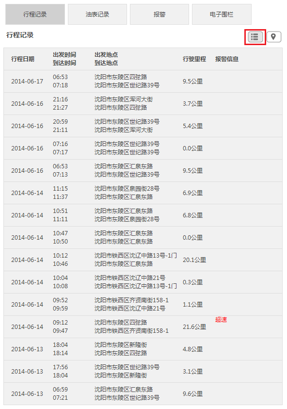
查看更多
地图模式和列表模式都默认显示最近的信息，请点击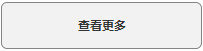,可以查看更多行程记录。
电子围栏报警
在列表模式下，如果行程中有报警，则在每段行程信息的最后一列，会显示报警信息。如果报警包含电子围栏报警，则在电子围栏报警后会有三角箭头显示，点击三角箭头，在行程记录下方将显示电子围栏报警的详细信息。
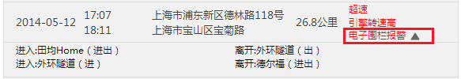
油表记录
当前版本此功能暂未开放。
报警
点击报警TAB页标签，页面会显示当前车辆的报警信息。
可以通过选择年月查看报警信息。默认选择为当前年月。
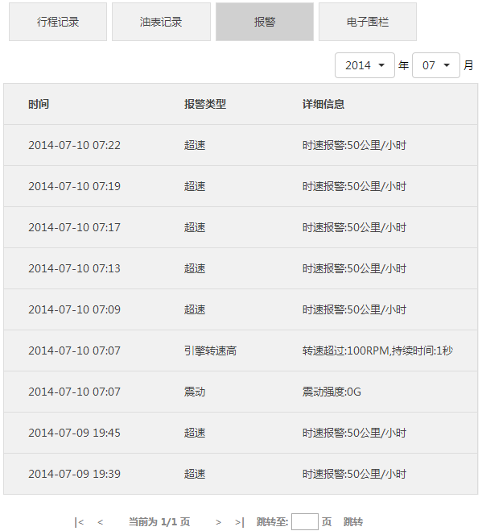
电子围栏
点击电子围栏TAB页标签，页面会显示当前车辆的电子围栏报警信息。
可以通过选择年月查看电子围栏报警信息。默认选择为当前年月。
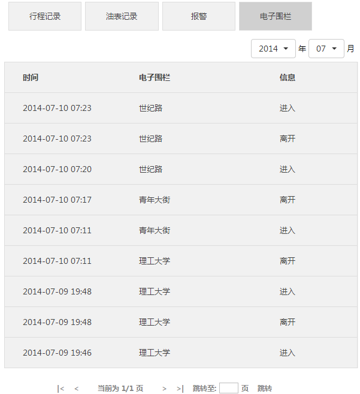
地图位置
在车辆详情页面的右上角，会分别以地图和文字的形式显示当前车辆的位置。
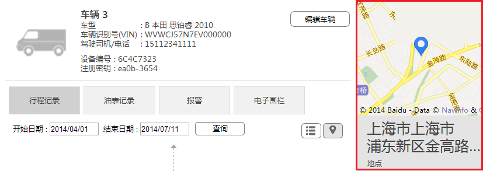
车辆信息
在车辆详情页面的右侧，会显示当前车辆的总里程、当前时速、发动机状态、电池状态以及油量。
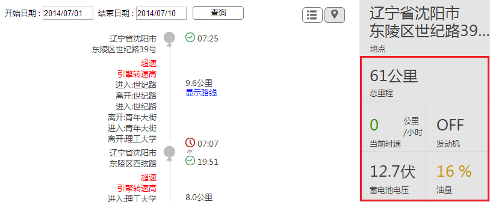
健康状况
在车辆详情页面的右侧，会显示车辆的健康状况。
点击【获取故障码】，弹出故障码对话框。
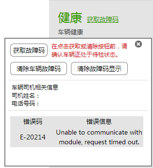
(1) 获取故障码
点击故障码对话框中的【获取故障码】按钮，将取得当前车辆的故障码。
详细信息会在故障码信息区域显示。
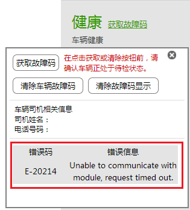
(2) 清除车辆故障码
点击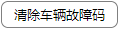，会将服务器端连同车端的故障码一起清除。
(3) 清除故障码显示
点击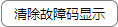，只会清除车辆端的故障码。